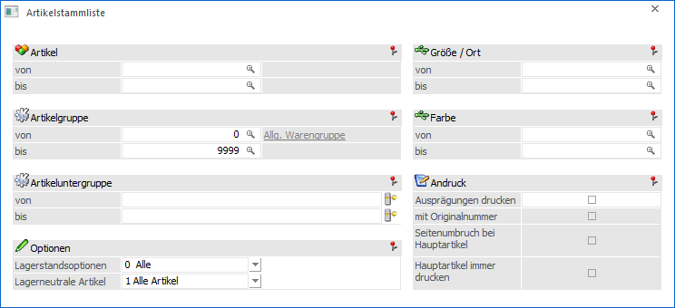
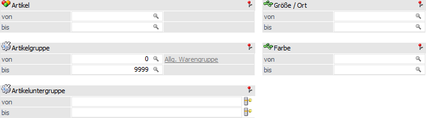
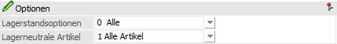
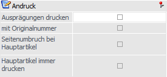
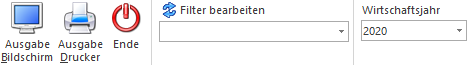

In der Artikelstammliste, welche über den Menüpunkt…
1 WinLine FAKT
1 Auswertungen
1 Stammdatenliste
1 Artikelstammliste
… geöffnet wird, werden alle relevanten Informationen zu den einzelnen Artikeln dargestellt, d.h.:
ü Artikelnummer
ü Bezeichnung
ü Chargen- / Identnummer
ü Originalnummer
ü Lagerstand / Lagerwert
ü Zusatzfelder
Hinweis
Die Funktionalität der Zusatzleisten wird an dieser Stelle unterstützt.

Folgende Einstellungen können getroffen werden:
Selektion

Ø Artikel von / bis
An dieser Stelle können die Artikel für die Auswertung hinterlegt werden.
Ø Artikelgruppe von / bis
In diesen Feldern kann nach den Artikelgruppen eingeschränkt werden, welche in der Auswertung berücksichtigt werden sollen.
Ø Artikeluntergruppe von / bis
An dieser Stelle kann nach den Artikeluntergruppen eingeschränkt werden. Bleiben die Felder leer, so werden alle Artikel aller Artikeluntergruppen in der Auswertung berücksichtigt.
Ø Ausprägung 1 von / bis (hier "Größe / Ort")
Zusätzlich kann eine Einschränkung auf die Ausprägung 1 vorgenommen werden. Sobald eine Einschränkung auf Ausprägung 1 vorhanden ist, wird die, unter "Artikel" eingegebene Nummer, als Hauptartikelnummer verwendet.
Beispiel
Wenn unter "Artikel von / bis" die Nummer "10018" und unter Ausprägung 1 "K" bis "E" eingegeben wird, werden alle selektierten Ausprägungsartikel des Artikels 10018 in der Auswertung berücksichtigt.
Ø Ausprägung 2 von / bis (hier "Farbe")
Neben Ausprägung 1 kann auch eine Einschränkung auf die Ausprägung 2 vorgenommen werden. Sobald eine Einschränkung auf Ausprägung 2 vorhanden ist, wird die, unter "Artikel" eingegebene Nummer, als Hauptartikelnummer verwendet.
Beispiel
Wenn unter "Artikel von / bis" die Nummer "CZ010" und unter Ausprägung 2 "GR" bis "ROT" eingegeben wird, werden alle selektierten Ausprägungsartikel des Artikels CZ010 in der Auswertung berücksichtigt.
Optionen

Ø Lagerstandsoptionen
An dieser Stelle kann aufgrund des Lagerstands entschieden werden, ob Artikel auf der Auswertung ausgegeben werden sollen oder nicht. Folgende Möglichkeiten stehen hierbei zur Auswahl:
ü 0 - Alle
ü 1 - mit Lagerbewegung
ü 2 - mit Lagerstand größer 0
ü 3 - mit Lagerstand ungleich 0
ü 4 - mit Lagerstand kleiner 0
ü 5 - mit Lagerstand gleich 0 und Lagerwert ungleich 0
ü 6 - mit Lagerstand gleich 0 (unabhängig vom) Lagerwert
ü 7 - mit komm. Menge größer 0
Ø Lagerneutrale Artikel
Aus der Auswahlliste kann gewählt werden, wie lagerneutrale Artikel auf der Auswertung behandelt werden sollen.
ü 1 - Alle Artikel
ü 2 - Nur lagerneutrale Artikel
ü 3 - Nur nicht lagerneutrale Artikel
Andruck

Ø Ausprägungen drucken
Ist diese Option aktiviert, so werden auch die Ausprägungsartikel (also die verschiedenen Größen, Farben, Chargen- bzw. Identnummern, etc.) angedruckt.
Hinweis
Durch eine Hinterlegung in den Selektionsfeldern "Ausprägung 1 von / bis" bzw. "Ausprägung 2 von / bis" wird die Option automatisch aktiviert.
Ø mit Originalnummer
Wenn Ausprägungen gedruckt werden sollen, dann kann mit Hilfe dieser Option entschieden werden, ob neben der Ausprägungsartikelnummer auch die intern verwendete Artikelnummer ausgegeben werden soll.
Ø Seitenumbruch bei Hauptartikel
Ist diese Option aktiviert, so wird vor jedem neuen Ausprägungshauptartikel automatisch ein Seitenumbruch durchgeführt.
Ø Hauptartikel immer drucken
Mit dieser Option wird zusätzlich die Hauptartikelzeile mit angedruckt, auch wenn durch eine weitere Option (z.B. Lagerstand = 0 und Lagerwert <> 0) der Hauptartikel ausgeschlossen werden würde. Diese Option kann nur gesetzt werden, wenn auch die Option "Ausprägungen drucken" aktiviert ist.
Buttons

Ø Ausgabe Bildschirm
Mit Hilfe des Buttons "Ausgabe Bildschirm" oder der Taste F5 wird die Auswertung am Bildschirm ausgegeben.
Ø Ausgabe Drucker
Durch Anwahl des Buttons "Ausgabe Drucker" wird die Auswertung am Drucker ausgegeben.
Ø Ende
Durch Anwahl des Buttons "Ende" bzw. der Taste ESC wird die Auswertung geschlossen.
Ø Filter bearbeiten
Durch Anklicken des Buttons "Filter bearbeiten" kann die Auswertung nach frei definierbaren Kriterien eingeschränkt werden.
Ø Wirtschaftsjahr
Über die Auswahlbox kann das Wirtschaftsjahr gewählt werden, für welches die Auswertung erfolgen soll. Damit können die Daten aus den Vorjahren angezeigt werden, ohne dass das Fenster geschlossen und ein manueller Wirtschaftsjahreswechsel vorgenommen werden muss.